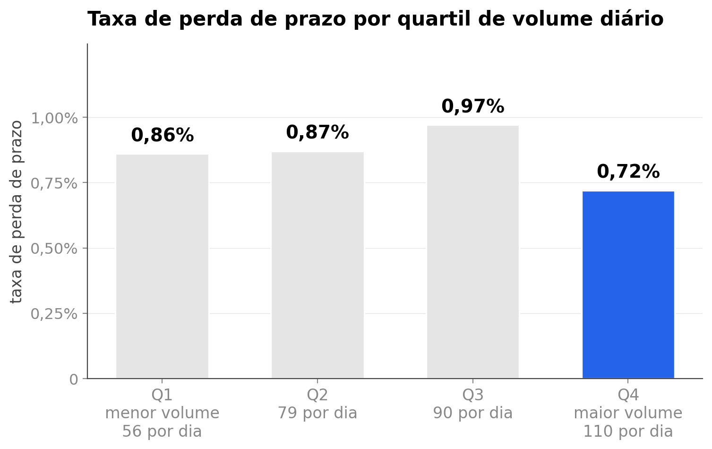

<style>
/* ═══ slide 7 · volume não prevê quebra ══════════════════════════════════════
   O slide intelectualmente mais importante do deck: ele derruba a hipótese
   óbvia e é o que justifica a solução ter dois modelos em vez de um.

   O gráfico é de quartil de volume, não dos dois extremos: quatro pontos
   derrubam a intuição melhor que dois, e o quartil MAIS CHEIO é justamente o de
   menor taxa. O azul está só nele, porque é ali que a cor comunica algo.

   Figura matplotlib em dpi 200, de _figuras_modelos.py.
   ══════════════════════════════════════════════════════════════════════════ */
.vol .body{padding-top:14px}
.vol .tt{font-size:52px;letter-spacing:-1.9px}
.vol .fig{display:block;border-radius:10px}
.vol .quadro{padding:22px 26px}

/* o número que fecha o argumento */
.vol .bat{display:flex;align-items:baseline;gap:18px}
.vol .bat .v{font-weight:900;line-height:.84;color:var(--accent);
  font-variant-numeric:tabular-nums}
.vol .bat .k{font-size:16.5px;line-height:1.42;color:var(--tx)}
.vol .bat .k b{color:var(--head);font-weight:700}

/* as duas perguntas que a separação responde */
.vol .duas{display:flex;flex-direction:column}
.vol .pg{display:flex;align-items:flex-start;gap:14px;padding:18px 0;
  border-bottom:1px solid #DCE4EF}
.vol .pg:last-child{border-bottom:none}
.vol .pg .ic{width:20px;height:20px;margin-top:3px;flex-shrink:0;
  color:var(--accent)}
.vol .pg .q{font-size:19px;font-weight:800;letter-spacing:-.3px;color:var(--head)}
.vol .pg .r{font-size:14.5px;line-height:1.4;color:var(--tx);margin-top:4px}
.vol .pg .r b{color:var(--head);font-weight:700}

/* ── variação A · figura à esquerda, o número e as duas perguntas à direita ── */
.vl-a .cena{flex:1;display:flex;align-items:center;gap:48px;margin-top:14px;
  min-height:0}
.vl-a .quadro{flex-shrink:0}
.vl-a .fig{width:918px}
.vl-a .lado{flex:1;min-width:0;display:flex;flex-direction:column;gap:34px}
.vl-a .bat .v{font-size:126px;letter-spacing:-5px}
.vl-a .bat .k{max-width:270px}

/* ── variação B · o número domina em cima, figura e perguntas embaixo ── */
.vl-b .cena{flex:1;display:flex;flex-direction:column;gap:22px;margin-top:12px;
  min-height:0}
.vl-b .bat{align-self:flex-start}
.vl-b .bat .v{font-size:134px;letter-spacing:-5.4px}
.vl-b .bat .k{max-width:340px;font-size:18px}
.vl-b .baixo{display:flex;align-items:center;gap:46px}
.vl-b .fig{width:760px}
.vl-b .duas{flex:1;min-width:0}
</style>

<section class="slide light vol vl-a" data-slide="7" data-var="a" data-quem="ana">
  <div class="mesh"></div><div class="grid-bg"></div>
  <div class="hd">
    <div class="bi"><svg viewBox="0 0 28 28" fill="none"><path d="M6 22L12 14L16 17L22 8" stroke="#fff" stroke-width="2.2" stroke-linecap="round" stroke-linejoin="round"/><circle cx="22" cy="8" r="3" stroke="#3B82F6" stroke-width="1.5"/><circle cx="22" cy="8" r="1.2" fill="#3B82F6"/></svg></div>
    <div class="bn">Cronos</div><span class="bt">BANCA FINAL &middot; 15/09/2026</span>
    <div class="tag">261 dias úteis de 2025</div>
  </div>
  <div class="body">
    <span class="eb"><span class="rv" style="--d:240ms">O que era intuitivo, e é falso</span></span>
    <h1 class="tt"><span class="mask" style="--d:340ms"><span>Volume não prevê quebra</span></span></h1>

    <div class="cena">
      <div class="quadro cartao rv3" style="--d:620ms">
        
      </div>

      <div class="lado">
        <div class="bat rv3" style="--d:900ms">
          <span class="v"><span class="ct" data-to="2,5" data-dec="1" data-delay="1100">0,0</span>%</span>
          <span class="k">da variação das quebras é o que <b>o volume do dia explica</b></span>
        </div>

        <div class="duas">
          <div class="pg rv" style="--d:1440ms">
            <svg class="ic" viewBox="0 0 24 24"><path d="M3 17.4c3.4 0 4.6-9.6 8.4-9.6 3.9 0 4.5 9.6 8.4 9.6"/><path d="M3 21h18"/></svg>
            <div>
              <div class="q">Quanta carga vem?</div>
              <p class="r">O volume responde. É o que <b>dimensiona a escala</b> do dia.</p>
            </div>
          </div>
          <div class="pg rv" style="--d:1620ms">
            <svg class="ic" viewBox="0 0 24 24"><circle cx="12" cy="12" r="8.4"/><circle cx="12" cy="12" r="3.4"/><path d="M12 1.6v3M12 19.4v3M1.6 12h3M19.4 12h3"/></svg>
            <div>
              <div class="q">Qual incidente quebra?</div>
              <p class="r">O volume não responde. Precisa de <b>modelo por incidente</b>.</p>
            </div>
          </div>
        </div>
      </div>
    </div>
  </div>
  <div class="ft"></div>
</section>

<section class="slide light vol vl-b" data-slide="7" data-var="b" data-quem="ana">
  <div class="mesh"></div><div class="grid-bg"></div>
  <div class="hd">
    <div class="bi"><svg viewBox="0 0 28 28" fill="none"><path d="M6 22L12 14L16 17L22 8" stroke="#fff" stroke-width="2.2" stroke-linecap="round" stroke-linejoin="round"/><circle cx="22" cy="8" r="3" stroke="#3B82F6" stroke-width="1.5"/><circle cx="22" cy="8" r="1.2" fill="#3B82F6"/></svg></div>
    <div class="bn">Cronos</div><span class="bt">BANCA FINAL &middot; 15/09/2026</span>
    <div class="tag">261 dias úteis de 2025</div>
  </div>
  <div class="body">
    <span class="eb"><span class="rv" style="--d:240ms">O que era intuitivo, e é falso</span></span>
    <h1 class="tt"><span class="mask" style="--d:340ms"><span>Volume não prevê quebra</span></span></h1>

    <div class="cena">
      <div class="bat rv3" style="--d:620ms">
        <span class="v"><span class="ct" data-to="2,5" data-dec="1" data-delay="820">0,0</span>%</span>
        <span class="k">da variação das quebras é o que <b>o volume do dia explica</b></span>
      </div>

      <div class="baixo">
        <div class="quadro cartao rv3" style="--d:1000ms">
          
        </div>

        <div class="duas">
          <div class="pg rv" style="--d:1360ms">
            <svg class="ic" viewBox="0 0 24 24"><path d="M3 17.4c3.4 0 4.6-9.6 8.4-9.6 3.9 0 4.5 9.6 8.4 9.6"/><path d="M3 21h18"/></svg>
            <div>
              <div class="q">Quanta carga vem?</div>
              <p class="r">O volume responde. É o que <b>dimensiona a escala</b> do dia.</p>
            </div>
          </div>
          <div class="pg rv" style="--d:1540ms">
            <svg class="ic" viewBox="0 0 24 24"><circle cx="12" cy="12" r="8.4"/><circle cx="12" cy="12" r="3.4"/><path d="M12 1.6v3M12 19.4v3M1.6 12h3M19.4 12h3"/></svg>
            <div>
              <div class="q">Qual incidente quebra?</div>
              <p class="r">O volume não responde. Precisa de <b>modelo por incidente</b>.</p>
            </div>
          </div>
        </div>
      </div>
    </div>
  </div>
  <div class="ft"></div>
</section>
